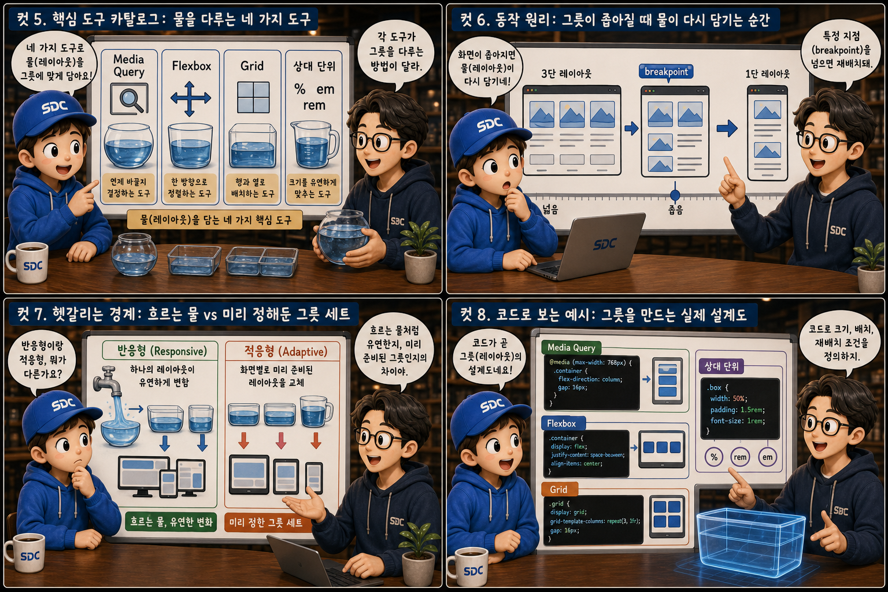

같은 물이 컵에서는 컵 모양으로, 대야에서는 대야 모양으로 담기듯 — 콘텐츠는 그대로, 배치만 화면에 맞춰 흐릅니다.
MobilevsDesktop
같은 웹페이지인데 휴대폰에서는 답답하게 잘려 보이거나, 반대로 모니터에서는 텅 빈 여백만 가득할 때가 있습니다. 이 글은 그 차이를 만드는 원리, 즉 반응형 웹 디자인(Responsive Web Design)을 하나의 비유로 풀어봅니다. 같은 물이 좁은 유리컵에 담기면 컵 모양으로, 넓은 대야에 담기면 대야 모양으로 자연스럽게 형태를 바꾸듯, 잘 만든 레이아웃은 화면이 휴대폰이든 모니터든 그 크기에 맞춰 스스로 흐릅니다. 12컷을 따라가며 그 물이 어떤 도구로, 어떤 원리로 그릇에 담기는지 하나씩 짚어보겠습니다.
PART 1 / 3 — 같은 물, 다른 그릇 (컷 01–04)
fourcut-01 — 컷 01 ~ 04
컷 01
같은 물, 다른 그릇
같은 콘텐츠(물)가 휴대폰(작은 컵)에도 모니터(넓은 대야)에도 자연스럽게 담긴다 — 이것이 반응형 웹 디자인이 하는 일이다.
맑은 물줄기 하나가 위에서 흘러내립니다. 왼쪽 좁은 유리컵에 담기면 물은 세로로 길쭉하게 모양을 바꾸고, 오른쪽 넓은 대야에 담기면 같은 물이 가로로 넓게 퍼집니다. 컵 옆에는 휴대폰 실루엣이, 대야 옆에는 모니터 실루엣이 겹쳐 있습니다. 콘텐츠는 하나인데 그릇 모양에 따라 담기는 형태가 달라지는 것 — 반응형 웹 디자인을 한 장면으로 압축하면 바로 이 모습입니다.
컷 02
정의: 뷰포트에 반응하는 그릇
반응형 웹 디자인이란 화면 크기, 즉 뷰포트(viewport)에 따라 레이아웃이 자동으로 조정되도록 설계하는 방식이다.
반응형 웹 디자인(Responsive Web Design)이란 브라우저 창이나 기기의 화면 크기, 즉 viewport의 너비에 따라 레이아웃이 자동으로 조정되도록 CSS를 설계하는 방식을 말합니다. 화면마다 별도의 페이지를 따로 만드는 것이 아니라, 하나의 HTML과 CSS가 그릇의 크기를 감지해 물처럼 스스로 형태를 바꾸도록 규칙을 정해두는 것입니다. 이 규칙의 핵심 도구가 바로 미디어 쿼리(media query)와 유연한 배치 시스템이며, 뒤이어 나올 컷들에서 하나씩 다루게 됩니다. device-agnostic layout
컷 03
나란히 비교: 굳은 그릇 vs 흐르는 물
고정 크기 레이아웃은 작은 화면에서 넘치거나 잘리지만, 유연한 레이아웃은 화면에 맞춰 스스로 재배치된다.
고정 크기 레이아웃은 너비를 px 같은 절대 단위로 못 박아두기 때문에, 화면이 그보다 좁아지면 콘텐츠가 잘리거나 가로 스크롤이 생깁니다. 딱딱한 도자기 그릇에 물을 부으면 넘쳐흐르는 것과 같습니다. 반면 유연한 레이아웃은 상대 단위와 유연한 배치 규칙을 사용해, 그릇이 작아지면 물이 자연스럽게 그 안에 다시 담기듯 콘텐츠가 재배치됩니다. 오늘날 대부분의 트래픽이 모바일에서 발생하기 때문에, 이 차이는 실제 사용성에 직결됩니다.
컷 04
원칙 인용카드: 작은 그릇부터 설계하라
Mobile-First 원칙은 가장 작은 화면(작은 컵)을 기준으로 먼저 설계하고, 점점 큰 그릇으로 넓혀가라는 철학이다.
MOBILE FIRST
작은 컵부터 기본 스타일을 짠다
THEN EXPAND
min-width로 점점 넓혀간다
Mobile-First
Mobile-First는 가장 제약이 많은 작은 화면을 기준으로 기본 스타일을 먼저 작성하고, 화면이 커질수록 min-width 미디어 쿼리로 스타일을 추가해나가는 설계 원칙입니다. 이렇게 하면 작은 화면에서 불필요한 요소를 걷어내는 데 집중하게 되어 성능과 사용성이 자연스럽게 좋아집니다. 반대로 데스크탑을 먼저 만들고 작은 화면에 맞춰 줄이는 방식은 불필요한 코드가 쌓이기 쉽습니다.
PART 2 / 3 — 도구와 동작 원리 (컷 05–08)

fourcut-02 — 컷 05 ~ 08
컷 05
핵심 도구 카탈로그: 물을 다루는 네 가지 도구
Media Query, Flexbox, Grid, 상대 단위는 물(레이아웃)을 그릇에 맞게 담는 네 가지 핵심 도구다.
반응형 레이아웃을 만드는 핵심 도구는 크게 네 가지입니다. @media는 화면 너비 같은 조건에 따라 다른 CSS 규칙을 적용하고, display: flex는 요소들을 한 줄(가로 또는 세로) 방향으로 유연하게 배치하며, display: grid는 행과 열을 가진 2차원 격자로 복잡한 레이아웃을 구성합니다. 상대 단위(%, rem, vw 등)는 크기 자체를 화면에 비례하도록 만들어 이 모든 도구의 기반이 됩니다.
컷 06
동작 원리: 그릇이 좁아질 때 물이 다시 담기는 순간
화면 너비가 줄어들다가 특정 지점(breakpoint)을 지나면, 3단 레이아웃이 1단으로 자연스럽게 재배치된다.
넓은 화면 · 3단 배치→너비 감소→@media (max-width: 768px)→좁은 화면 · 1단 배치
breakpoint는 레이아웃이 다른 형태로 전환되는 화면 너비의 기준점입니다. 화면 너비가 넓을 때는 3개의 칸이 나란히 배치되다가, 너비가 breakpoint 아래로 줄어드는 순간 미디어 쿼리가 새로운 스타일 규칙을 적용해 칸들을 세로로 쌓습니다. 이 전환은 사용자가 창 크기를 조절하는 실시간으로 일어나며, 페이지를 새로고침할 필요가 없습니다.
컷 07
헷갈리는 경계: 흐르는 물 vs 미리 정해둔 그릇 세트
반응형(Responsive)은 하나의 레이아웃이 유연하게 변하는 것이고, 적응형(Adaptive)은 화면별로 미리 준비된 레이아웃을 갈아 끼우는 것이다.
반응형(Responsive) 디자인은 하나의 CSS 규칙 집합이 연속적인 미디어 쿼리와 유연한 단위로 모든 화면 크기에 물 흐르듯 대응합니다. 반면 적응형(Adaptive) 디자인은 미리 정해진 몇 개의 화면 크기(예: 320px, 768px, 1200px)에 맞춰 완전히 별도로 설계된 레이아웃을 준비해두고, 감지된 화면에 맞는 것을 통째로 제공합니다. 오늘날 웹 개발에서는 유지보수가 쉬운 반응형 방식이 주류이지만, 두 방식을 섞어 쓰는 경우도 흔합니다.
컷 08
코드로 보는 예시: 그릇을 만드는 실제 설계도
media query와 Flexbox, Grid 코드가 실제로 그릇(레이아웃)의 형태를 어떻게 정의하는지 눈으로 확인한다.
/* 칸 최소 200px, 남는 폭은 균등 분배 */
.grid {
display: grid;
grid-template-columns:
repeat(auto-fit, minmax(200px, 1fr));
}
실제 코드에서는 @media (min-width: 768px)처럼 조건을 걸어 특정 너비 이상일 때만 스타일을 바꿉니다. Flexbox는 display: flex와 flex-direction으로 요소를 가로나 세로로 유연하게 배치하고, Grid는 display: grid와 grid-template-columns: repeat(auto-fit, minmax(200px, 1fr))처럼 최소 크기를 지정해두면 화면 너비에 따라 열의 개수가 자동으로 조절됩니다. 이 세 가지 코드 패턴만 익혀도 대부분의 반응형 레이아웃을 구현할 수 있습니다.
PART 3 / 3 — 실전 감각과 요약 (컷 09–12)
fourcut-03 — 컷 09 ~ 12
컷 09
흔한 실수: 깨진 그릇과 확대된 물
px 같은 절대 단위만 고집하거나 viewport meta tag를 빠뜨리면, 그릇이 물을 제대로 담지 못하고 넘친다.
⚠ 실수 1 — px 단위만 고집
너비나 여백을 px 같은 절대 단위로만 고정해두면, 화면이 그보다 작아지는 순간 콘텐츠가 잘리거나 원치 않는 가로 스크롤이 생깁니다.
⚠ 실수 2 — viewport meta tag 누락
HTML head에 viewport meta tag를 빠뜨리면, 모바일 브라우저가 페이지를 데스크탑 크기로 렌더링한 뒤 축소해 보여주어 텍스트가 지나치게 작거나 확대되어 보입니다.
✓ 해결 — 상대 단위 + viewport meta tag
width: 100%;처럼 상대 단위로 바꾸고, <meta name="viewport" content="width=device-width, initial-scale=1">를 head에 넣는 것만으로도 두 실수의 절반은 해결됩니다.
주방의 레시피북을 손님 테이블 위에 그대로 펼쳐두듯, 그릇의 크기를 무시하고 물의 양을 고정해버리면 결국 넘치거나 억지로 눌려 담깁니다. 반응형 CSS를 아무리 잘 짜도 이 두 가지 기본을 놓치면 쉽게 무력화됩니다.
컷 10
트레이드오프 비교표: 단위와 배치 도구의 저울
절대 단위와 상대 단위, Flexbox와 Grid는 각각 쓰임새와 학습 난이도가 다른 저울추다.
same layout, different trade-offs
비교 축
절대 단위 (px)
상대 단위 (rem · % · vw)
정의
화면 크기와 무관하게 고정된 값
화면·부모·루트 폰트 크기에 비례하는 값
예측 가능성
높음 (항상 같은 크기)
상대적으로 낮음 (맥락에 따라 달라짐)
반응형 적합도
낮음 (좁아지면 잘리거나 넘침)
높음 (그릇 크기에 맞춰 자동 조정)
대표 단위
px
rem, %, vw, vh
학습 난이도
쉬움
계산 흐름 이해가 필요해 약간 더 까다로움
px 같은 절대 단위는 정확하고 예측 가능하지만 화면 크기가 달라지면 유연하게 대응하지 못합니다. rem, %, vw 같은 상대 단위는 화면이나 부모 요소, 루트 폰트 크기에 비례해 자동으로 늘어나거나 줄어들어 반응형에 적합하지만, 계산 흐름을 예측하기가 조금 더 까다롭습니다. 같은 저울질은 Flexbox와 Grid 사이에도 있습니다 — 한 줄 배치엔 Flexbox가 직관적이고, 2차원 격자엔 Grid가 강력하지만 개념을 익히는 데 조금 더 시간이 걸립니다.
컷 11
언제 무엇을 쓰나: 줄 세울 땐 병, 격자엔 얼음틀
한 줄로 늘어놓을 요소에는 Flexbox를, 격자형의 복잡한 레이아웃에는 Grid를 선택한다.
🧭 한 줄 배치가 필요할 때 → Flexbox
네비게이션 바
버튼 그룹
카드 한 줄 정렬
🧭 격자형 복잡한 배치가 필요할 때 → Grid
대시보드
갤러리
전체 페이지 레이아웃
요소들을 한 방향(가로 또는 세로)으로 순서대로 늘어놓거나 정렬하는 경우, 예를 들어 네비게이션 메뉴나 버튼 그룹이라면 Flexbox가 더 직관적이고 코드도 간결합니다. 반면 페이지 전체 레이아웃이나 갤러리, 대시보드처럼 행과 열을 동시에 제어해야 하는 2차원 구조라면 Grid가 훨씬 명확하게 의도를 표현합니다. 실무에서는 전체 틀은 Grid로 잡고 그 안의 세부 정렬은 Flexbox로 다듬는 조합이 흔합니다.
컷 12
실전 판별 + 핵심 요약: 그릇 밖으로 넘치지 않는가
"휴대폰으로 접속했을 때도 가로 스크롤 없이 다 보이는가"라는 질문 하나로 반응형 여부를 실전 판별할 수 있다.
반응형 웹 디자인이 잘 되어 있는지 가장 빠르게 확인하는 방법은 휴대폰으로 접속했을 때 가로 스크롤 없이 모든 콘텐츠가 화면 안에 자연스럽게 보이는지를 확인하는 것입니다. 이번 장에서 다룬 핵심은 뷰포트에 반응하는 설계, Mobile-First 원칙, Media Query, Flexbox와 Grid, 상대 단위, 그리고 viewport meta tag 여섯 가지입니다. 이 여섯 가지가 물이 어떤 그릇에도 자연스럽게 담기도록 만드는 반응형 웹의 기본 도구 세트입니다.
뷰포트에 반응Mobile-FirstMedia QueryFlexbox·Grid상대 단위viewport meta tag
같은 물, 어떤 그릇에도
반응형 웹 디자인은 콘텐츠를 그대로 둔 채, 화면이라는 그릇의 크기에 맞춰 배치만 스스로 흐르게 만드는 설계입니다. 좁은 컵에서도 넓은 대야에서도, 사용자는 같은 물을 자연스럽게 받아 마실 수 있어야 합니다.